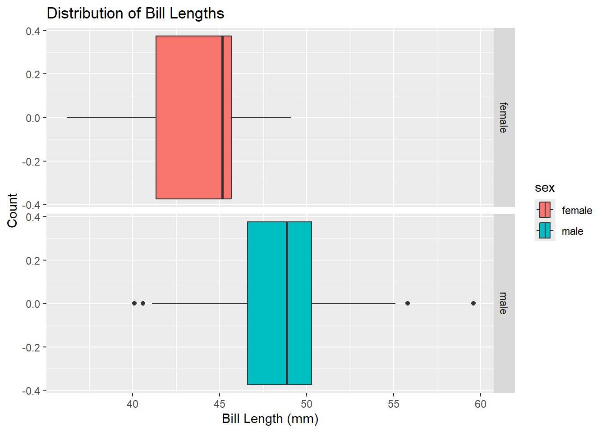

The Palmer Penguins data set is a widely used asset for learning to display, manipulate, and summarize data. With observations of penguins on selected islands between 2007-2009, anyone looking to use it has a variety of categorical and numerical data to work with. Here’s I’ll be working through a Tidy Analysis to get familiar with several fundamental capabilities in R, including functions like filter() and group_by() as well as visualizing data with ggplot().
After loading our packages and data, we can use the head function to take a peek at the first few rows of our data set.
Displaying Data
penguins |>count(island)
# A tibble: 3 × 2
island n
<chr> <int>
1 Biscoe 36
2 Dream 3
3 Torgersen 5
This simple command allows us to sort our data by count. In this case, R can count how many instances are in each category. Here we can see there are 36 penguins from Biscoe Island, 3 penguins from Dream Island, and 5 penguins from Torgersen Island.
penguins |>count(island, species)
# A tibble: 5 × 3
island species n
<chr> <chr> <int>
1 Biscoe Adelie 3
2 Biscoe Gentoo 33
3 Dream Adelie 1
4 Dream Chinstrap 2
5 Torgersen Adelie 5
By using the parameters of both island and species within count, we can see how many penguins of each species were found on the islands. The first line shows a simple way of executing the function that creates multiple instances of each island when there is a different species. The second command is Dr. Duryea’s example for making a “prettier” version of the table, with separate columns for each species for better legibility.
library(kableExtra)#another example from Dr. Dpenguins %>%count(island, species) %>%pivot_wider(names_from = species, values_from = n, values_fill =0) %>%kable() %>%kable_styling(bootstrap_options =c("hover", "striped"))
island
Adelie
Gentoo
Chinstrap
Biscoe
3
33
0
Dream
1
0
2
Torgersen
5
0
0
An even prettier way to create a readable table is to utilize the kableExtra package. This creates a more table-like display with the same columns as the last example and some extra styling.
# A tibble: 1 × 1
mean_bill_length_mm
<dbl>
1 46.4
Here, we can summarize one of our numerical values with summarize(). If there are values missing from the data, then oftan R won’t calculate the solution to your computation, and the result will be NA. To avoid this, we add na.rm = TRUE as a parameter, which removes blank values that return as NA.
# A tibble: 6 × 2
name value
<chr> <dbl>
1 min_bill_length 36.2
2 first_quartile_bill_length 44.6
3 median_bill_length 46.4
4 mean_bill_length_mm 46.4
5 third_quartile_bill_length 49.1
6 standard_deviation_bill_length 4.93
For more information, we can also find other statistics, like the minimum, maximum, mean, and more from our data. In each of them, we can include na.rm = TRUE to make sure R is returning a number and not NA.
# A tibble: 6 × 2
name value
<chr> <dbl>
1 min_bill_length 36.2
2 first_quartile_bill_length 44.6
3 median_bill_length 46.4
4 mean_bill_length_mm 46.4
5 third_quartile_bill_length 49.1
6 standard_deviation_bill_length 4.93
An easier way to remove all the missing values while running this analysis is to use a filter before summarizing. By using !is.na, we tell the function to include every value that isn’t NA.
Now that everything is sorted, we can pipe our work into a kable command like before to make an appealing table.
Selecting Columns and Rows
penguins |>select(species, island, sex, year)
# A tibble: 44 × 4
species island sex year
<chr> <chr> <chr> <dbl>
1 Gentoo Biscoe male 2007
2 Gentoo Biscoe male 2008
3 Gentoo Biscoe male 2009
4 Gentoo Biscoe male 2009
5 Gentoo Biscoe male 2009
6 Gentoo Biscoe male 2009
7 Gentoo Biscoe male 2008
8 Gentoo Biscoe male 2009
9 Gentoo Biscoe male 2008
10 Gentoo Biscoe male 2007
# ℹ 34 more rows
Here, we can use the select() function to isolate only the columns we’re focused on for all of our instances.
penguins |>select(species, island, sex, year) |>filter(species =="Chinstrap")
# A tibble: 2 × 4
species island sex year
<chr> <chr> <chr> <dbl>
1 Chinstrap Dream male 2009
2 Chinstrap Dream female 2007
By piping the result into a filter function, we can see only the species we are interested in, like Chinstrap penguins in this example.
# A tibble: 2 × 3
island sex year
<chr> <chr> <dbl>
1 Dream male 2009
2 Dream female 2007
Since we’re only working with one species, we can deselect it from our output with select(-species) then using another head() function to display our results.
The function group_by() allows us to group our data by the species of penguin and subsequently use them to find the mean bill length and depth of each species independently.
Based on that computation, Chinstrap penguins had the largest mean depth compared to the other species but also the largest standard deviation, meaning the given values varied from the mean more widely than the other species. Adelie penguins had the next largest mean bill depth, and Gentoo penguins had the smallest mean bill depth. Both Adelie and Gentoo penguins had similar deviations compared to the Chinstraps.
Data Visualization
One Categorical Variable
penguins %>%ggplot() +geom_bar(mapping =aes(x = species)) +labs(title ="Counts of Penguin Species",x ="Species", y ="Count")
This plot from Dr. D’s examples illustrates the total count of each species of penguin within the data frame. We can see that Gentoo penguins were the most common within the data set, followed by Adelie and then Chinstraps.
penguins |>ggplot() +geom_bar(mapping =aes(x = island)) +labs(title ="Counts of Penguins by Island",x ="Islands" )
I created this plot to display the count of penguins in the data frame based on which island they were from. Most penguins were from Biscoe Island. Torgersen Island had far less penguins but had the second most penguins, and Dream Island had the least amount of penguins.
One Numerical Variable
penguins %>%ggplot() +geom_histogram(mapping =aes(x = bill_length_mm),color ="white",fill ="blue" ) +labs(title ="Distribution of Bill Lengths",x ="Bill Length (mm)", y ="Count")
`stat_bin()` using `bins = 30`. Pick better value with `binwidth`.
Dr. D’s example histogram has the data summarized by bill length. We can observe that the tallest peaks, meaning highest count of penguins, lie between around 45 and 50 mm.
penguins |>ggplot() +geom_boxplot(mapping =aes(x = bill_length_mm), color ="black",fill ="#8ab0ed" ) +labs(title ="Distribution of Bill Lengths",x ="Bill Length (mm)", y ="Count" )
This box plot uses the same data but differentiates the percentiles of the data. Half of all the penguin bill lengths fall between the two sides of the box, with the lower 25% of values extending out from the box on the left, and the upper 25% on the right. The dark line at the center represents the median. While the histogram can give you a good idea of the most common value(s) for a variable at a quick glance, you can use a box plot to more easily visualize different statistics that you might be interested in depending on the data you’re looking at and what you’re using it for.
Two Numerical Variables
penguins %>%ggplot() +geom_point(mapping =aes(x = bill_depth_mm, y = bill_length_mm)) +labs(title ="Bill Depth and Length",x ="Bill Depth (mm)",y ="Bill Length (mm)")
With two numerical variables, a scatter plot is the most common method of displaying the data. This one compares the bill length of each penguin to the bill depth, both measured in millimeters. You can observe a slight positive correlation at the first half of the scatterplot that becomes more chaotic as bill depth increases.
penguins |>ggplot() +geom_point(mapping =aes(x = flipper_length_mm, y = body_mass_g)) +labs(title ="Flipper Length and Body Mass",x ="Flipper Length (mm)",y ="Body Mass (g)")
My scatterplot is a visualization of flipper length compared to body mass. Compared to the previous plot, there seems to be a much stronger positive correlation between the two variables.
Two Categorical Variables
penguins %>%ggplot() +geom_bar(mapping =aes(x = island, fill = species)) +labs(title ="Species by Island",x ="Island",y ="Species")
With two categorical variables, we use a variation of bar graphs that adds coloration to differentiate the second variable. In this graph, we see again that Biscoe Island had the most penguin observations out of the three, but now we also know most of those instances were Gentoo penguins followed by a few Adelie penguins. Dream Island had both Adelie and Chinstrap penguins, and it was the only island to have Chinstraps. Lastly, Torgersen Island only had observations of Adelie penguins and no other species.
Categorical and Numerical Variables
penguins %>%ggplot() +geom_boxplot(mapping =aes(x = bill_depth_mm, y = species)) +labs(title ="Bill Depth by Species",x ="Bill Depth (mm)",y ="")
Box plots allow us to compare both a categorical variable like the penguins’ species with a numerical variable like bill depth. In this plot, we can see how bill depth varies between species with unique boxes for each.
`stat_bin()` using `bins = 30`. Pick better value with `binwidth`.
Facet wrapping within ggplot allow users to separate each numerical values by a given category. Here, our plot appears as 3 separate sections, one for each species. Within each plot, the frequency of the values are shown for that species only.
Advanced plotting
penguins %>%filter(!is.na(sex)) %>%ggplot() +geom_point(mapping =aes(x = bill_length_mm, y = flipper_length_mm,color = species,shape = sex)) +geom_smooth(mapping =aes(x = bill_length_mm,y = flipper_length_mm,color = species),method ="lm") +facet_grid(island ~ sex, scales ="free") +labs(title ="Flipper and Bill Lengths by Species and Sex",x ="Bill Length (mm)",y ="Flipper Length(mm)") +theme_light()
`geom_smooth()` using formula = 'y ~ x'
Warning in qt((1 - level)/2, df): NaNs produced
Warning in qt((1 - level)/2, df): NaNs produced
Warning in max(ids, na.rm = TRUE): no non-missing arguments to max; returning
-Inf
Warning in max(ids, na.rm = TRUE): no non-missing arguments to max; returning
-Inf
These plots have a combination of more complex functions to create more complicated graphs. Faceting allows us to develop a way to display three categorical variables (sex, island, and species) alongside two numerical variables (flipper length and bill length). The faceting was created using the function facet_grid(island ~ sex). The columns of faceting are labelled male and female to separate the sexes of the penguins, and the faceting rows are labelled by island to distinguish the origins of each penguin. Within the plots, each point is colored and has been assigned a specific shape by using color = species within the aesthetics of geom_point and geom_smooth functions and shape = sex within only geom_point. Lastly, Flipper length and bill length are assigned to the two axis within the aesthetics of the plots.
Through the whole plot, we can come to some conclusions about the data. The abundance of Gentoo penguins is clear. It seems that their flipper and bill length experience a slight positive correlation within males, but female flipper length remains relatively consistent while bill length varies. Adelie penguins have far less observations, but there is a slight positive correlation with females on Torgersen island. Other instances have only one or two observations, and making conclusions based on them would be prone to inaccuracy. Chinstrap penguins only have two observations, one male and one female, so again, conclusions here are probably unreliable.
penguins %>%filter(!is.na(sex)) %>%ggplot() +geom_point(mapping =aes(x = body_mass_g, y = flipper_length_mm,color = species,shape = sex)) +geom_smooth(mapping =aes(x = body_mass_g,y = flipper_length_mm,color = species),method ="lm") +facet_grid(year~species, scales ="free") +labs(title ="Flipper and Body Mass by Species and Sex",x ="Body Mass (g)",y ="Flipper Length(mm)") +theme_grey() +scale_color_manual(values =c("#3342f2", "#418b43", "#8b2a52") )
`geom_smooth()` using formula = 'y ~ x'
Warning in qt((1 - level)/2, df): NaNs produced
Warning in max(ids, na.rm = TRUE): no non-missing arguments to max; returning
-Inf
For my variation, I created facets that separate the data by species and year and changed the x axis from bill length to body mass. I also changed the colors using a different theme and the scale_color_manual function. The shape differentiation remains the same, separated by sex. Gentoo penguins saw positive correlations between flipper length and body mass for each of the three years the penguins were observed. Adelie penguins only had one or two observations in the first two years, but observations in 2009 had enough to suggest another positive correlation, although both body mass and bill length are smaller than the general Gentoo population. Chinstrap penguins again only have their two instances, but you can still get relevant information from them. You can see how there was a year of no Chinstrap observations in 2008, and only one observations in the other two years.
Final Question
Can we figure out the average bill length for our penguins, and if that number exceeds 45mm through these graphs? To do this, we can backtrack to our singular numerical value.
penguins |>filter(!is.na(sex)) |>ggplot() +geom_histogram(mapping =aes(x = bill_length_mm),color ="white",fill ="blue" ) +labs(title ="Distribution of Bill Lengths",x ="Bill Length (mm)", y ="Count")
`stat_bin()` using `bins = 30`. Pick better value with `binwidth`.
This histogram, our original one, includes all of the penguin observations. It displays a high concentration of observations right after the 45mm mark, and more observations seem to populate on to the right of that point, exceeding 45mm, than to the left of it, suggesting most penguins have bills longer than 45mm.
penguins |>filter(!is.na(sex)) |>ggplot() +geom_histogram(mapping =aes(x = bill_length_mm, fill = sex) ) +labs(title ="Distribution of Bill Lengths",x ="Bill Length (mm)", y ="Count" ) +facet_grid(sex ~ .)
`stat_bin()` using `bins = 30`. Pick better value with `binwidth`.
Here, I added faceting to the plot to separate the bill lengths by sexes. For females, we can see the high concentration of observations right around 45mm, and more under 45mm than there are above 45mm. For males, most bill lengths exceed 45mm.
penguins |>filter(!is.na(sex)) |>ggplot() +geom_boxplot(mapping =aes(x = bill_length_mm), color ="black",fill ="#8ab0ed" ) +labs(title ="Distribution of Bill Lengths",x ="Bill Length (mm)", y ="Count" )
A box plot makes the average a bit easier to visualize. The median lies ahead of 45mm by a fair amount, and most of the interquartile range (IQR) lies beyond that point as well. Based on this, we can assume that the average would be beyond 45mm.
penguins |>filter(!is.na(sex)) |>ggplot() +geom_boxplot(mapping =aes(x = bill_length_mm, fill = sex) ) +labs(title ="Distribution of Bill Lengths",x ="Bill Length (mm)", y ="Count" ) +facet_grid(sex ~ .)

When separate by sex, the results vary. Again, females seem to have smaller bills on average, with most of their IQR extending below 45mm, and their median seems to lie at about 45mm. The IQR for males, on the other hand, far exceeds 45mm, similar to what the histograms showed.
mean(penguins$bill_length_mm)
[1] 46.37045
The true average bill length for all the penguins is just over 45mm, which we surmised from our numerical plots. The initial histogram had the most observations concentrated just after 45mm, and the IQR of the box plot
# A tibble: 2 × 2
sex mean_bill_length_mm
<chr> <dbl>
1 female 43.6
2 male 48.7
By splitting the two by sex, we can see that, like our other observations, the average bill lengths for females was just under 45mm while the males on average were over. Through plot analysis, we can gain a general impression of the “shape” of the data and estimate statistics like average with ease.